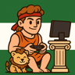
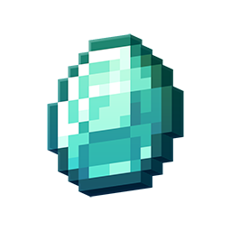

Chat activo
Conversaciones diarias en canales organizados para que siempre encuentres tema.

Andalucía ClubComunidad online andaluza
Un espacio cercano para charlar, jugar y conocer gente de Andalucía. Canales temáticos, actividades y una comunidad activa todos los días.
Andalucía Club es un servidor pensado para personas de Andalucía que quieren conversar, compartir aficiones y encontrar gente con intereses similares. Aquí puedes participar en charlas diarias, unirte a partidas y descubrir planes online con un ambiente cercano.
Conversaciones diarias en canales organizados para que siempre encuentres tema.
Partidas en grupo, recomendaciones y canales para tus juegos favoritos.
Humor local, memes del día y buen rollo para desconectar.
Una comunidad cercana para hacer nuevas amistades y compartir aficiones.
Somos pioneros en crear una comunidad andaluza en línea.
La comunidad reúne personas de todas las provincias de Andalucía.
Una comunidad online andaluza con buen trato, moderación activa y normas claras.
Espacios para gaming, cultura, humor, tecnología, estudio y temas locales.
Actividad diaria para que nunca te falte conversación o plan.
Personas de todas las provincias y un tono cercano que se nota desde el primer día.
Es un espacio dentro de Discord organizado por canales de texto y voz, con roles y normas. Sirve para reunir a una comunidad, compartir temas, coordinar actividades y conversar en tiempo real o cuando te venga bien desde móvil o PC.
Entra con el enlace directo de invitación. Accede con tu cuenta de Discord y entrarás al servidor. Si aún no tienes cuenta, puedes crearla en unos minutos y volver a usar el mismo enlace.
Sí, el acceso y la participación son gratuitos.
Una comunidad andaluza abierta, cercana y con buen ambiente para charlar, jugar y conocer gente de Andalucía.
Sí, participan personas de Sevilla, Málaga, Granada, Córdoba, Cádiz, Jaén, Huelva y Almería, y también hay personas de fuera del país.
Claro, hay canales para partidas, recomendaciones y grupos de juego.
Sí, hay un espacio para humor, memes y contenido ligero.
Para nada. Entras, echas un vistazo y ya estás dentro. Si te pierdes, pregunta sin miedo: siempre hay alguien que te echa un cable.
Sí, existen reglas básicas para mantener un entorno seguro y agradable.
Sí, comparte el enlace de invitación para que más personas se unan.

Survival multijugador
La comunidad tiene un servidor de Minecraft abierto a todo el mundo para jugar con quien quieras. Un survival pensado para construir, explorar y pasarlo bien en grupo.
Siempre hay gente online para explorar, construir y compartir partidas.
Haz clic y entra a la comunidad online andaluza más activa.